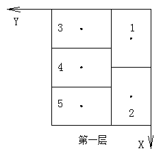
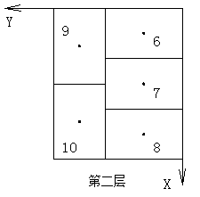
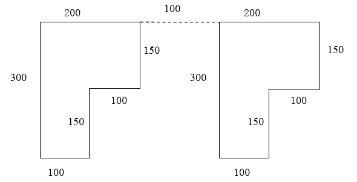

1、工业机器人一般有四个坐标系，________、________、________和________。
1、设置工业机器人参考点时，在手动模式下控制机器人各关节轴移动至标准零点姿态，然后在校准界面中输入各关节轴的零点值，下列数值为正确的零点值的是（ ）。
2、下列关于程序名描述错误的是（ ）。
3、器人末端执行器的位置和姿态简称为位姿。在空间坐标系中，位置和姿态分别是由（ ）旋转自由度确定。
4、动作类型是指工业机器人采用什么运动方式到达指定位置的运动路径,下列不属于机器人动作类型有（ ）。
5、坐标系设置指令UFRAME[i]=(value)的value可以取（ ）。
6、装盘码垛是指在托盘上装放同一形状的立体形包装物品，可以采取各种交错咬合的办法码垛，这样可以保证托盘具有足够的稳定，甚至不需要再用其他方式加固。下列属于托盘上货体码放方式的是（ ）。
7、下列关于HSR-612工业机器人工具坐标系描述错误的是（ ）。
8、在执行以下程序过程中，工业机器人将调用几次abc子程序（ ）。
R[1]=5
LBL [1]
IF R[1]<1 JMP LBL[2]
CALL abc
R[1]= R[1]-1
JMP LBL[1]
9、下列关于机器人安全操作描述正确的是（ ）。
10、HSR-612工业机器人最大可搬运质量（ ）。

